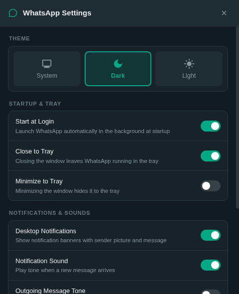

It loads web.whatsapp.com — the same client WhatsApp serves to a
browser, so nothing here is a reverse-engineered protocol and nothing puts an
account at risk. What is added is everything a browser tab cannot give it:
a tray, real desktop notifications, calls, and your own font.
$ curl -fsSL https://abdallah-shehawey.github.io/shinux-repo/install.sh | sudo sh
==> rpm system detected, installing shinux-release==> done.$ sudo dnf install whatsapp-desktop
Installed:whatsapp-desktop-1.6.1-1.x86_64$ whatsapp-desktop
No browser needed — it carries its own Chromium.
Signed packages from the shinux repository.
Updates with your system, through dnf, apt or pacman.
What it does
The parts a browser tab cannot do.
One notification per message
The sender, the text and the sender's picture, a click that opens that
conversation, and a withdrawal the moment you read it — on your phone as
readily as here. Media says what it is (📷 Photo,
🎤 Voice message) instead of looking like somebody typing the word.
Voice and video calls
Full WebRTC, camera and microphone permissions handled for you, and screen
sharing over PipeWire on Wayland — whole screens or a single window. Calls get
a window of their own.
Your desktop's own font
The whole page is drawn in the family you chose in Settings, applied live when
you change it. Arabic reads right to left in a banner instead of wrapping the
wrong way under a Latin name.
Lives in the tray
Closing the window keeps the client connected and messages arriving.
Ctrl+Q and the tray's Quit are the two ways out, and it can
start hidden at login. On GNOME it waits for the AppIndicator extension rather
than giving up when it starts first.
Settings and a theme switcher
System, dark or light, autostart at login, and how the tray behaves — from
Ctrl+, or the tray menu. No config file needed unless you
want one.
WhatsApp's own page, untouched
No protocol re-implementation and no third-party bridge. Everything added
lives around the page, not inside the account — and it installs alongside the
C client rather than
over it.

Settings, without a text editor
Everything the client does is a switch: the theme, the font it draws the page
in, whether closing the window hides it to the tray, whether a banner makes a
sound, and how long one stays on screen before it is refiled silently in the
notification centre.
Every switch also exists in
~/.config/whatsapp-desktop/whatsapp-desktop.conf —
the whole table is below.
Install
Pick your distribution — every command is on this page, nothing to
read anywhere else. The packages come from a GPG-signed repository, so
dnf, apt or pacman keeps the client up to
date with the rest of the system.
1 · Add the signed repository
curl -fsSL https://abdallah-shehawey.github.io/shinux-repo/install.sh | sudo sh
One script for all three package managers: it detects
dnf, apt or pacman, imports the signing key,
writes a single repository file under /etc, and stops there. It
installs no packages of its own. If you would rather not pipe into a shell, the
three tabs beside this one spell the same steps out by hand.
Fedora, RHEL, CentOS Stream, Rocky and Alma. gpgcheck=1
is what verifies the package itself; metadata verification is left off so
dnf install <TAB> still works as an unprivileged user.
Ubuntu 24.04 and later, Debian 12 and later, Mint 22 and later — the
package needs a glibc recent enough for Electron 40. The
.sources file is deb822 format; apt has read it since
Debian 12 and Ubuntu 22.04.
sudo tee -a /etc/pacman.conf >/dev/null <<'EOF'
[shinux]
Server = https://abdallah-shehawey.github.io/shinux-repo/arch/$arch
SigLevel = Required DatabaseOptional
EOF
3 · Install
sudo pacman -Sy
sudo pacman -S whatsapp-desktop
A native .pkg.tar.zst from a signed repository — not an
AUR recipe, so there is nothing to compile. Manjaro and EndeavourOS take the same
steps.
The leading ./ matters: without it both
dnf and apt look for a package by that name in a
repository instead of reading the file. Grab the file from
the downloads below.
This does not update itself. A file install stays
at the version you fetched — the repository above is the only reason to prefer it.
First run. Launch WhatsApp from your applications menu
or run whatsapp-desktop, then link it the way you would link a browser:
on your phone, Settings → Linked devices → Link a device, and scan the code
on screen. Nothing is typed into this client but the QR scan.
The package installs a system-wide autostart entry, so the client starts hidden
in the tray at login. To stop that: Settings → Applications → Startup, or
delete /etc/xdg/autostart/io.github.shehawey.whatsapp-desktop.desktop.
Your session and settings live in
~/.local/share/whatsapp-desktop and
~/.config/whatsapp-desktop; delete those two directories to leave
nothing behind.
Everything above is signed with
AE61 EBAE 9E82 36C0 2D44 F731 BAD3 F432 9468 897C
Downloads
Straight from the latest GitHub release —
the latest release.
Every file is built by CI from the tag, never uploaded by hand.
Packages from the shinux repository are GPG-signed as well, and
dnf, apt and pacman check that for you.
Configure
Every key optional, in
~/.config/whatsapp-desktop/whatsapp-desktop.conf. State lives in
~/.local/share/whatsapp-desktop.
Keys
Ctrl++ / - / 0
zoom in, out, reset
Ctrl+,
Settings
Ctrl+Shift+I
devtools
Ctrl+Q
quit for real
Esc
closes the emoji panel
window close
hides to the tray, stays connected
Configuration file
Key
Default
What it does
[view] font
GNOME's
family for everything the client draws
[view] font-size
16
root size in px — WhatsApp sizes in rem
[view] zoom
1.0
also set with Ctrl++/-
[view] force-font
true
draw the page in one family
[view] arabic-fix
false
widen the boxes Arabic descenders are clipped against
[window] width, height
1200×800
remembered on exit
[behaviour] close-to-tray
true
closing leaves the client running
[behaviour] minimize-to-tray
false
minimise is not close
[notifications] enabled
true
off hands notifications back to Chromium
[notifications] sound
true
a tone for the banners this client raises
[notifications] outgoing-sound
false
WhatsApp's tone for a message you send
[notifications] whatsapp-sound
false
let WhatsApp play its own arrival tone
[notifications] banner-seconds
12
before a banner is refiled silently
No banners on GNOME? The tray needs the AppIndicator extension,
and GNOME suppresses banners while a window is fullscreen, while presence is BUSY,
and while show-banners is off. Check that a plain
notify-send hello world floats first.
Build it yourself
Needs Node and nothing else. GPL-3.0 — icon origins are recorded in
data/icons/NOTICE.
git clone https://github.com/abdallah-shehawey/whatsapp-desktop
cd whatsapp-desktop
make # fetches Electron
make install # ~/.local, plus a desktop entry and icons
make autostart # also start hidden at login
make test # replays a chat list past the watcher